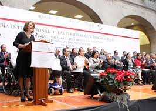

El Programa Nacional para el Desarrollo y la Inclusión de las Personas con Discapacidad, atiende las disposiciones internacionales y nacionales en materia de derechos humanos de laspersonas con discapacidad.
Derecho Internacional de Derechos Humanos para las Personas con Discapacidad: México reconoce la "Convención sobre los Derechos de las Personas con Discapacidad”, (1) y los Objetivos de Desarrollodel Milenio a favor de las personas con discapacidad, (2) y observalas recomendaciones del "Informe Mundial sobre Discapacidad”, (3) del "Estado Mundial de la Infancia”, (4) y del Consejo de DerechosHumanos de la ONU (Diario Oficial de la Federación, 2014).